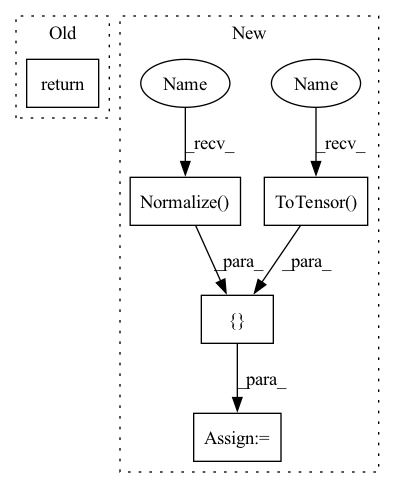

Pattern ID :16012

Before Change
crop_pct = crop_pct or DEFAULT_CROP_PCT
scale_size = int(math.floor(img_size / crop_pct))
return transforms.Compose([
transforms.Resize(scale_size, Image.BICUBIC),
transforms.CenterCrop(img_size),
AsNumpy(),
After Change
// prefetcher and collate will handle tensor conversion and norm
tfl += [ToNumpy()]
else:
tfl += [
transforms.ToTensor(),
transforms.Normalize(
mean=torch.tensor(mean),
std=torch.tensor(std))
]
// tfl += [
// ToTensor(),
// transforms.Normalize(
In pattern: SUPERPATTERN
Frequency: 3
Non-data size: 5
Instances
Fragment ID: 53832785
Project Name: feng-lab/pytorch-image-models
Commit Name: 45cde6f0c79a192612505def739bedb435fbeb73
Time: 2019-03-11
Author: rwightman@gmail.com
File Name: data/transforms.py
M Class Name: AnonimousClass
N Class Name: AnonimousClass
M Method Name: transforms_imagenet_eval(5)
N Method Name: transforms_imagenet_eval(2)
M Parent Class:
N Parent Class:
M File Name: data/transforms.py
N File Name: data/transforms.py
M Start Line: 45
M End Line: 53
N Start Line: 105
N End Line: 134
'>
Before Change
crop_pct = crop_pct or DEFAULT_CROP_PCT
scale_size = int(math.floor(img_size / crop_pct))
return transforms.Compose([
transforms.Resize(scale_size, Image.BICUBIC),
transforms.CenterCrop(img_size),
AsNumpy(),
After Change
// prefetcher and collate will handle tensor conversion and norm
tfl += [ToNumpy()]
else:
tfl += [
transforms.ToTensor(),
transforms.Normalize(
mean=torch.tensor(mean),
std=torch.tensor(std))
]
// tfl += [
// ToTensor(),
// transforms.Normalize(
'>
Fragment ID: 53832784
Project Name: alvinwan/nbdt-pytorch-image-models
Commit Name: 45cde6f0c79a192612505def739bedb435fbeb73
Time: 2019-03-11
Author: rwightman@gmail.com
File Name: data/transforms.py
M Class Name: AnonimousClass
N Class Name: AnonimousClass
M Method Name: transforms_imagenet_eval(5)
N Method Name: transforms_imagenet_eval(2)
M Parent Class:
N Parent Class:
M File Name: data/transforms.py
N File Name: data/transforms.py
M Start Line: 45
M End Line: 53
N Start Line: 105
N End Line: 134
'>
Before Change
transforms.Normalize((0.4914, 0.4822, 0.4465), (0.2023, 0.1994, 0.2010)),
CutoutDefault(cutout_size),
])
return transform_train
transform_test = transforms.Compose([
After Change
transforms.Normalize(mean, std),
CutoutDefault(cutout_size),
])
transform_test = transforms.Compose([
transforms.ToTensor(),
transforms.Normalize(mean, std),
])
return {"train": transform_train, "test": transform_test}
'>
Fragment ID: 53832786
Project Name: sungbinlim/neuboots
Commit Name: eb3f5919d5b1a02753cad92e7672f810d9b9eedb
Time: 2020-05-21
Author: phelahab@gmail.com
File Name: utils/preprocessing.py
M Class Name: AnonimousClass
N Class Name: AnonimousClass
M Method Name: get_transform(4)
N Method Name: get_transform(1)
M Parent Class:
N Parent Class:
M File Name: utils/preprocessing.py
N File Name: utils/preprocessing.py
M Start Line: 8
M End Line: 16
N Start Line: 8
N End Line: 28